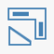
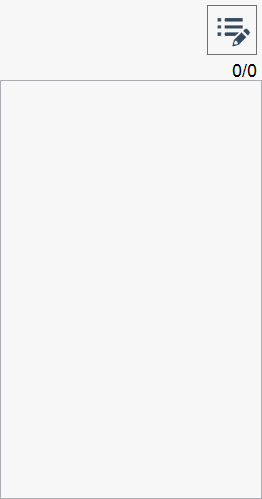
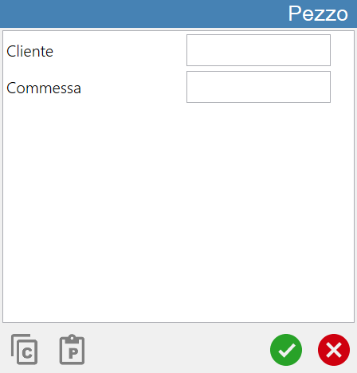
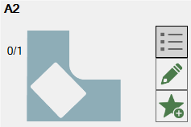

Parametrix is designed for the processing of flat and closed geometric figures, which represent the pieces.

Piece creation mode
As it is possible to observe from the top navigation bar,
the creation pieces occurs through the use of one of the following modes:
 | Import DXF file |
Rectangle Creation | |
 | Create parametric figures |
 | Import File CSV |
 | Chronology |
 | Favorites |
Piece Creation |
A more in-depth description of the operation of each mode will be provided in the relevant paragraph of this chapter.
The selected functionality is highlighted with a light green color. When opening the 'Create Pieces' panel, the operator will find selected the 'Rectangle creation' mode.
Import pieces in Parametrix
To correctly conclude the creation of one or more pieces, it is necessary to use the following button, that is possible to find in every section of the panel:
Import pieces |
NOTEThe operation of the pieces list, which is located on the right part of the panel, is explained in the related chapter.
In the following image you can observe how, after having pressed the 'Import pieces' button, the pieces list has populated itself with the elements that composed the DXF file that you decided to import.

List of imported pieces
The pieces list displayed in the right part of the 'Create Pieces' panel is initially empty. It is populated as pieces are created through the features described earlier in this chapter.
Below is reported an example of empty piece list (on the left) and an example of populated list (on the right):
 |  |
Advanced pieces properties
From the previous example images it is possible to note a single button present in the top right corner of the pieces list to work.
Show advanced Piece information |

In the bottom part of the Piece window there are two buttons illustrated below:
 | Copy |
 | Paste |
Visible the details of the piece
Following the example of the right-populated list displayed at the beginning of the chapter, the behavior of the following button is now highlighted:
Show piece details |
After the button’s pressure the piece in list appears as follows:

Add the selected piece among the favorites
Is possible insert any piece in the suitable section of the favorite pieces using the following button:
 | Add favorite |
The pressure of this button will make appear the following pop-up:

The compilation of the text field and subsequent confirmation will allow the operator to insert the selected piece into the list of favorite pieces, previously illustrated.